Contabilização BR One
Para o correto funcionamento de alguns processos do BR One que geram LCM é necessário a definição de contas contábeis.
Como a localização da conta contábil pode variar caso a empresa trabalhe com determinação avançada é necessário primeiro validar esta configuração e depois identificar a localização das contas.
Para saber se a empresa utiliza determinação avançada é necessário olhar o parâmetro ‘Ativar determinação avançada de conta do Razão’ localizado em:
Administração -> Inicialização do sistema -> Detalhes da empresa -> Aba Inicialização básica.
Caso parâmetro esteja desmarcado a empresa não utiliza determinação avançada e caso o parâmetro estiver marcado, a empresa utiliza determinação avançada.
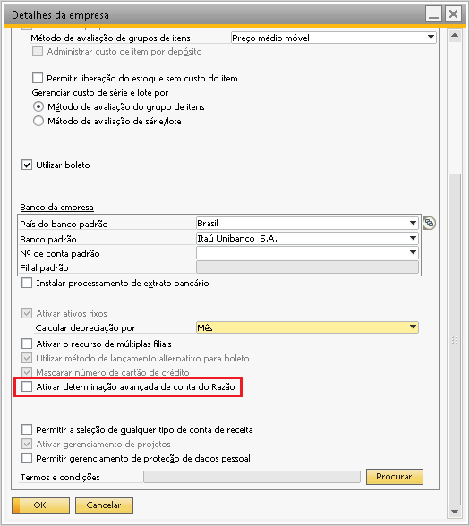{kind=link}
Para empresas que não utilizam determinação avançada: As contas podem ser definidas por depósito, nível do item ou grupo de itens e caso não encontre no local definido vai buscar na aba estoque da tela de determinação de contas do razão.

E dependendo da configuração, as contas serão recuperadas dos caminhos abaixo:
Depósito: Quando a determinação de contas é definida por depósito, o SAP/BR One irá buscar as contas do depósito envolvido na transação. Exemplo abaixo:
{kind=link}
Grupo de Itens: Quando a determinação de contas é definida por grupo de itens, o SAP/BR One irá buscar as contas do grupo de itens vinculado ao item envolvido na transação. Exemplo abaixo:
{kind=link}
Nível do item: Quando a determinação de contas é definida por nível do item, o SAP/BR One irá buscar as contas direto do cadastro do item, aba Estoque do item e depósito envolvidos na transação. Exemplo abaixo:
{kind=link}
Se nenhuma conta contábil for encontrada nesses locais definidos, a busca por conta irá ocorrer na tela de Determinação de contas do razão > aba estoque.
Esta tela pode ser encontrada em:
Administração -> Definição -> Finanças -> Determinação de conta do Razão -> Determinação de conta do Razão.
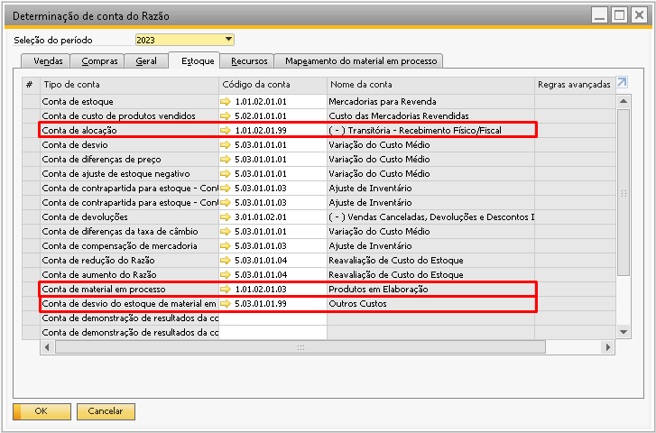{kind=link}
Para empresas que utilizam determinação avançada: As contas serão buscadas sempre dentro da tela de determinação de contas do razão, seja dentro de uma regra ou fora dela.
Caso existam regras para as contas contábeis o BR One olhará apenas as linhas de regras onde os únicos filtros serão Depósito ou Grupo de itens.
Segue exemplo abaixo:
Quando a determinação de contas do razão possui o botão “Avançado” e ao acessar este botão é aberta a tela com todas as regras avançadas.
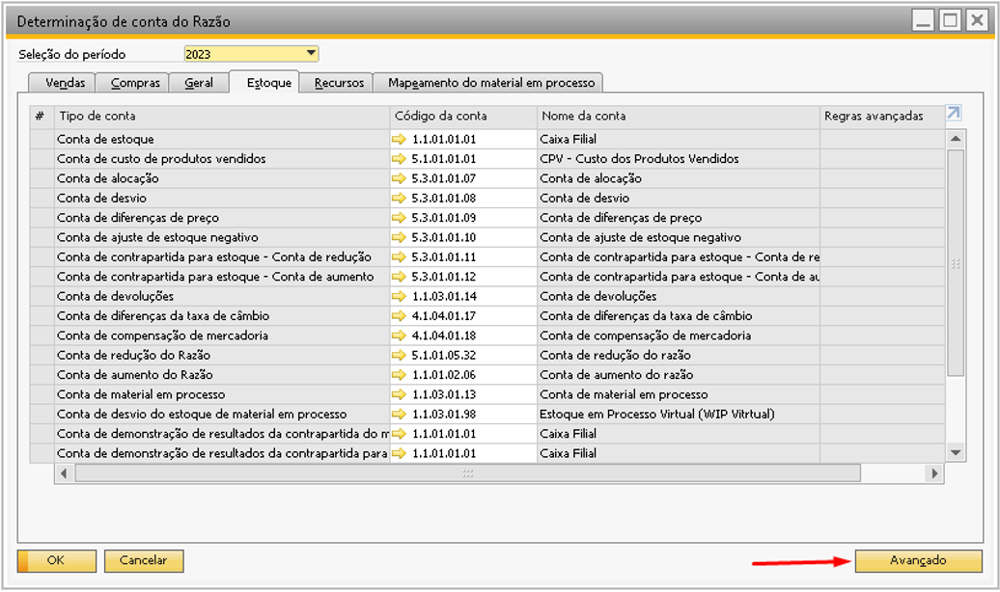 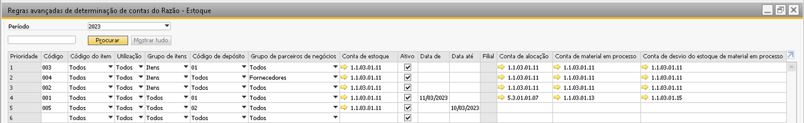{kind=link}
{kind=link}
Segue exemplos de regras onde o BR One vai conseguir entrar para buscar as contas:
1º Note que apenas o filtro Depósito está com preenchimento, os demais está como Todos, desta forma o BR One irá acessar a regra para olhar a conta.
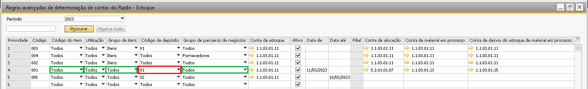{kind=link}
2º No segundo exemplo a mesma regra é válida, apenas o filtro Grupo de Itens está com preenchimento, os demais está como Todos, desta forma o BR One também acessará a regra para buscar a conta.
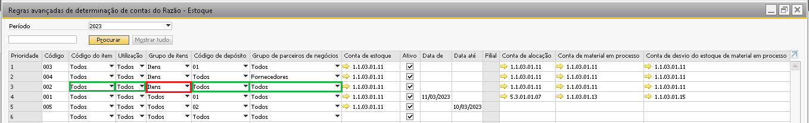{kind=link}
Agora, a regra que for com criada diferente de filtro único para depósito ou filtro único para grupo de itens o BR One não irá olhar essas regras, veremos exemplos abaixo onde o BR One não vai olhar a regra e vai acabar olhando a conta geral na tela de determinação de contas do razão > Aba depósito.
1º Note que quando a regra tiver mais de um filtro definido, seja ela qualquer filtro o BR One já não entra na regra.
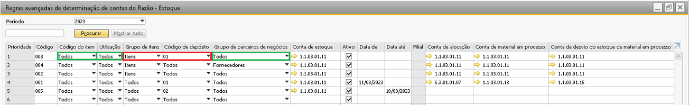{kind=link}
2º Outro exemplo de mais de um filtro definido para a regra. O BR One não irá acessar a regra para localizar a conta contábil.
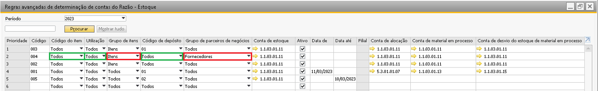{kind=link}
3º Outro ponto importante que pode fazer com eu o BR One não entre na regra é o campo Data. Notem que na linha com prioridade 5 temos apenas o filtro Depósito definido, sendo assim, o BR One iria olhar esta regra, porém, ela está vencida, pois o campo Data até definiu a validade desta regra apenas até 10/03/2023 e como a data já venceu esta linha não é mais válida.
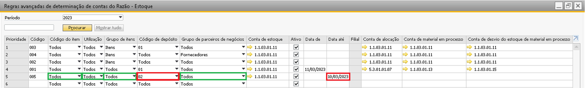{kind=link}
Outros pontos importantes que podem decidir se a regra está válida ou não são os campos “Filial” e campo “Ativo”. Caso o item atenda a mais de uma regra, a regra que será atendida será sempre a de prioridade mais alta. Ao olhar a imagem abaixo é possível notar que existe as duas regras válidas para o BR One, porém uma está com prioridade 3 e outra prioridade 4, então o BR One entrará sempre na prioridade mais alta, neste caso irá acessar a regra com prioridade 3.
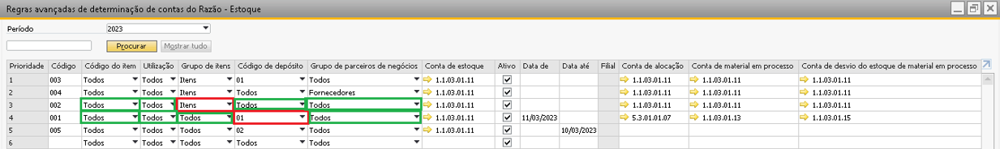 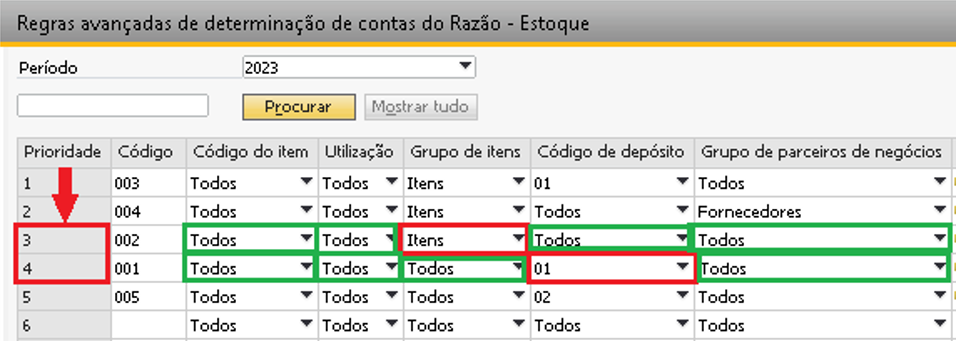{kind=link}
{kind=link}
Caso o BR One não encontre nenhuma regra válida, irá buscar a conta contábil geral, definida fora das regras. Se por exemplo a conta de alocação estiver sendo utilizada na transação irá olhar a conta de alocação da aba estoque da tela de determinação da conta do razão como no print abaixo:
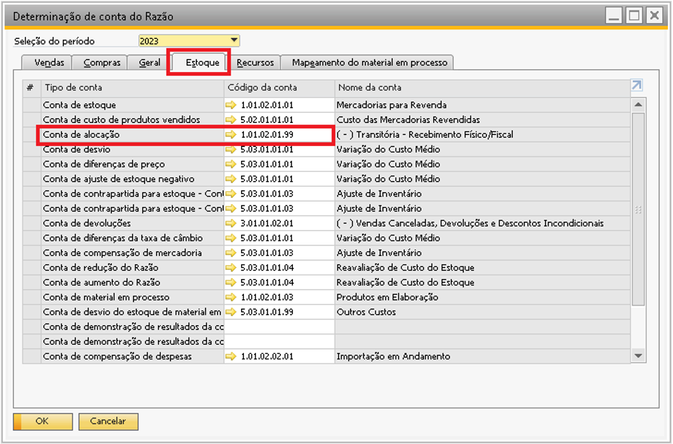{kind=link}